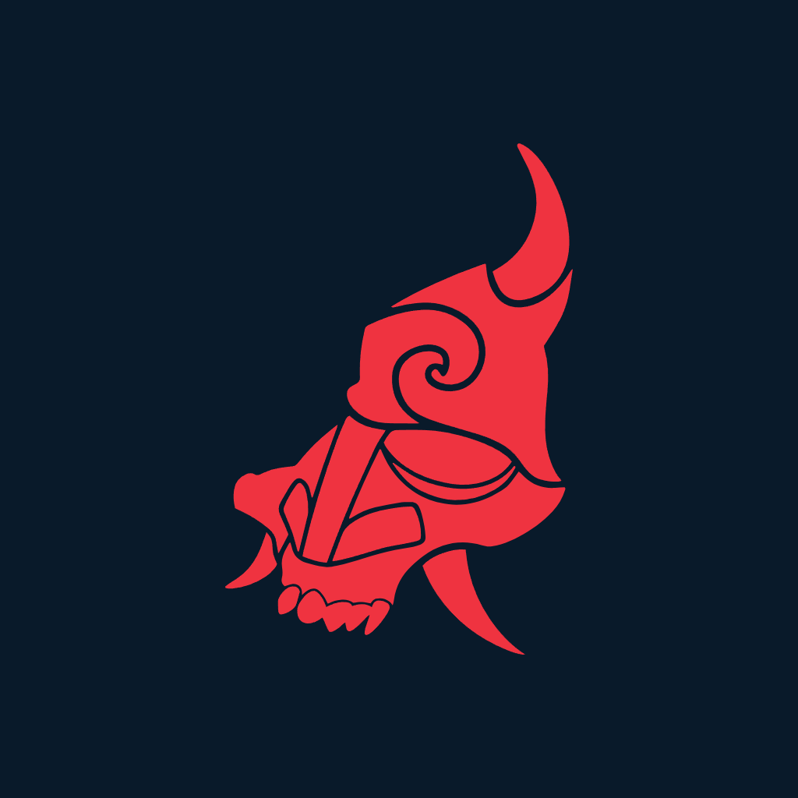
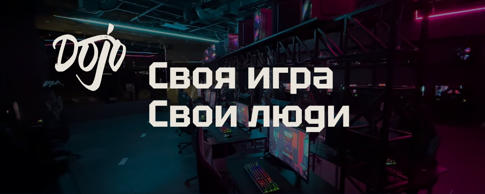
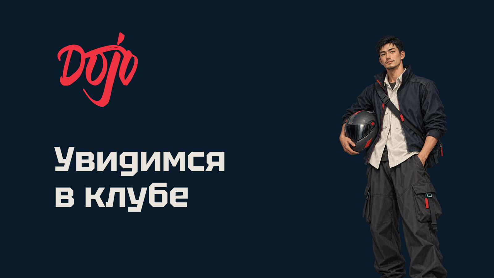
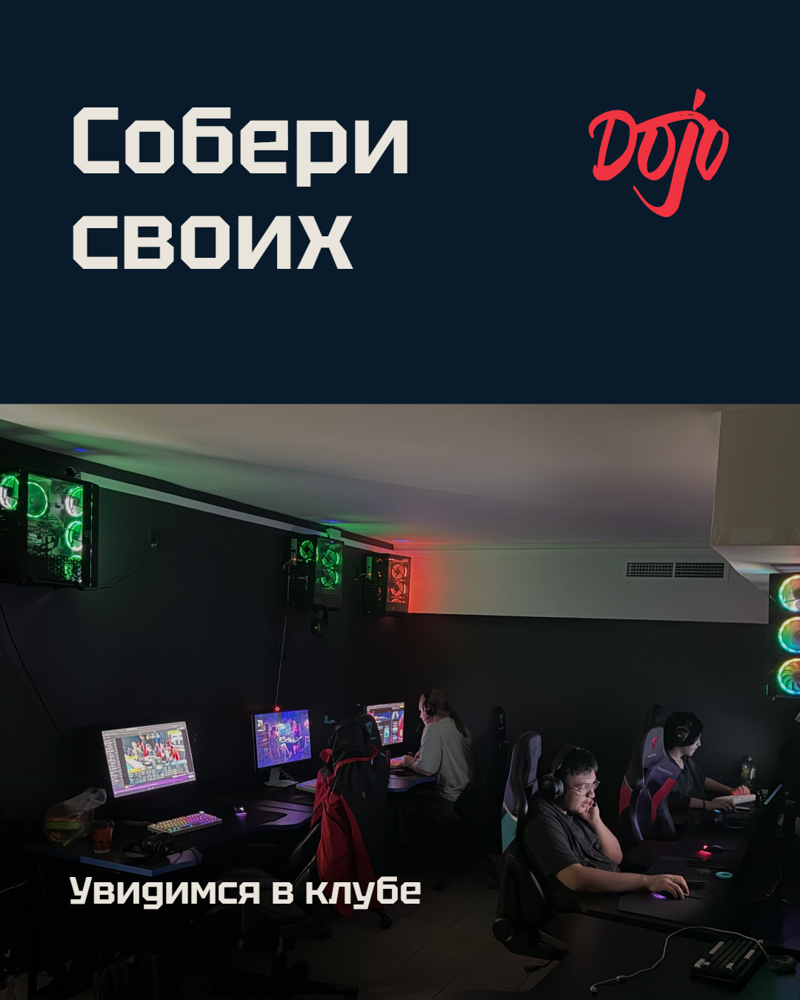
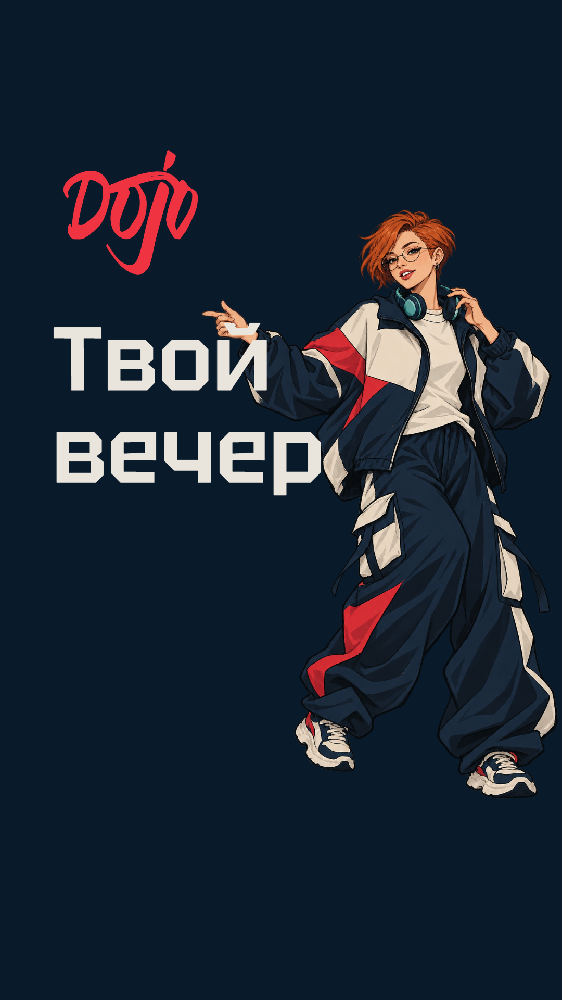

Аватар

1024 × 1024
Скачать PNG ↓Пять форматов без направляющих / версия 02

1024 × 1024
Скачать PNG ↓
1600 × 640
Скачать PNG ↓
1600 × 900
Скачать PNG ↓
1080 × 1350
Скачать PNG ↓
1080 × 1920
Скачать PNG ↓